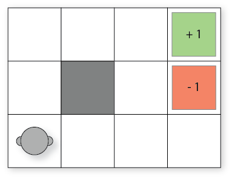

Markov Decision Processes¶
Learning outcomes¶
The learning outcomes of this chapter are:
Define ‘Markov Decision Process’.
Identify situations in which Markov Decisions Processes (MDPs) are a suitable model of a problem.
Compare MDPs to model of classical planning
Explain how Bellman equations are solutions to MDP problems
Chapter Overview¶
Classical planning algorithms assume that action are deterministic. Markov Decision Processes (MDPs) remove the assumption of deterministic events and instead assume that each action could have multiple outcomes, with each outcome associated with a probability.
For example:
Flipping a coin has two outcomes: heads (\(\frac{1}{2}\)) and tails (\(\frac{1}{2}\))
Rolling two dices together has twelve outcomes: 2 (\(\frac{1}{36}\)), 3 (\(\frac{1}{18}\)), 4 (\(\frac{3}{36}\)), …, 12 (\(\frac{1}{36}\))
When trying to pick up an object with a robot arm, there could be two outcomes: successful (\(\frac{4}{5}\)) and unsuccessful (\(\frac{1}{5}\))
When we connect to a web server, there is a 1% chance that the document we are requesting will not exist (404 error) and 99% it will exist.s
MDPs have been successfully applied to planning in many domains: robot navigation, planning which areas of a mine to dig for minerals, treatment for patients, maintenance scheduling on vehicles, and many others.
Definition
** Markov Decision Processes** (MDPs) are fully observable, probabilistic state models. The most common formulation of MDPs is a Discounted-Reward Markov Decision Process. A discount-reward MDP is a tuple \((S, s_0, A, P, r, \gamma)\) containing:
a state space \(S\)
initial state \(s_0 \in S\)
actions \(A(s) \subseteq A\) applicable in each state \(s \in S\)
transition probabilities \(P_a(s'|s)\) for \(s \in S\) and \(a \in A(s)\)
rewards \(r(s,a,s')\) positive or negative of transitioning from state \(s\) to state \(s'\) using action \(a\)
a discount factor \(0 \leq \gamma < 1\)
What is different between an MDP and the models from classical planning? There are four main differences:
The transition function is not deterministic. Each action has a probability of \(P_a(s'|s)\) of ending in state \(s'\) if \(a\) is executed in the state \(s\), whereas in classical planning, the outcome of each action is known in advance.
There are no goal states. Each action receives a reward when applied. The value of the reward is dependent on the state in which it is applied.
There are no action costs. Actions costs are modelled as negative rewards.
We have a discount factor.
The discount factor determines how much a future reward should be discounted compared to a current reward.
For example, would you prefer $100 today or $100 in a year’s time? We (humans) often discount the future and place a higher value on nearer-term rewards.
Assume our agent receives rewards \(r_1, r_2, r_3, r_4, \ldots\) in that order. If \(\gamma\) is the discount factor, then the discounted reward is:
If \(V_t\) is the value received at time-step \(t\), then \(V_t = r_t + \gamma V_{t+1}\). So, the further away a reward is from the start state \(s_0\), the less actual reward we will receive from it.
In an MDP, a discount reward must be strictly less than 1. Later, we will see why this is important.
Example MDP: Grid World
An agent is in the bottom left cell of a grid. The grey square is a wall. The two labelled cells give a reward: 1 for reaching the top-right cell, but a negative reward of -1 for the cell immediately below.

But! Things can go wrong — sometimes the effects of the actions are not what we want:
If the agent tries to move north, 80\(\%\) of the time, this works as planned (provided the wall is not in the way)
10\(\%\) of the time, trying to move north takes the agent west (provided the wall is not in the way);
10\(\%\) of the time, trying to move north takes the agent east (provided the wall is not in the way)
If the wall is in the way of the cell that would have been taken, the agent stays put.
The task is to navigate from the start cell in the bottom left to maximise the expected reward. What would the best sequence of actions be for this problem?
Example MDP model
Probabilistic PDDL is one way to represent an MDP. It extends PDDL with a few additional constructs. Of most relevance is that outcomes can be associated with probabilities. The following describes the “Bomb and Toilet” problem, in which one of two packages contains a bomb. The bomb can be diffused by dunking it into a toilet, but there is a 0.05 probability of the bomb clogging the toilet.
(define (domain bomb-and-toilet)
(:requirements :conditional-effects :probabilistic-effects)
(:predicates (bomb-in-package ?pkg) (toilet-clogged) (bomb-defused))
(:action dunk-package
:parameters (?pkg)
:effect (and (when (bomb-in-package ?pkg) (bomb-defused))
(probabilistic 0.05 (toilet-clogged))))
MDPs can also be expressed as code, rather than just as a model. An algorithm for solving the MDP creates an instance of a class and obtains the information that it requires to solve it.
Example MDP model as Python code: Grid World
First, we have an interface that defines what an MDP is:
class MDP:
''' Return all states of this MDP '''
def getStates(self): abstract
''' Return all actions with non-zero probability from this state '''
def getActions(self, state): abstract
''' Return all non-zero probability transitions for this action from this state '''
def getTransitions(self, state, action): abstract
''' Return the reward for transitioning from state to nextState via action '''
def getReward(self, state, action, nextState): abstract
''' Return the discount factor for this MDP '''
def getDiscountFactor(self): abstract
''' Return the initial state of this MDP '''
def getInitialState(self): abstract
''' Return all goal states of this MDP '''
def getGoalStates(self): abstract
Then, we need to implement this interface to create an MDP. Below is the implementation for getTransitions and getReward for GridWorld:
class GridWorld(MDP):
...
def getTransitions(self, state, action):
transitions = []
if state == self.TERMINAL:
if action == self.TERMINATE:
return [(self.TERMINAL, 1.0)]
else:
return []
(x, y) = state
if state in self.getGoalStates().keys():
if action == self.TERMINATE:
transitions += [(self.TERMINAL, 1.0)]
elif action == self.UP:
transitions += self.validAdd(state, (x, y + 1), 0.8)
transitions += self.validAdd(state, (x - 1, y), 0.1)
transitions += self.validAdd(state, (x + 1, y), 0.1)
elif action == self.DOWN:
transitions += self.validAdd(state, (x, y - 1), 0.8)
transitions += self.validAdd(state, (x - 1, y), 0.1)
transitions += self.validAdd(state, (x + 1, y), 0.1)
elif action == self.RIGHT:
transitions += self.validAdd(state, (x + 1, y), 0.8)
transitions += self.validAdd(state, (x, y - 1), 0.1)
transitions += self.validAdd(state, (x, y + 1), 0.1)
elif action == self.LEFT:
transitions += self.validAdd(state, (x - 1, y), 0.8)
transitions += self.validAdd(state, (x, y - 1), 0.1)
transitions += self.validAdd(state, (x, y + 1), 0.1)
return transitions
def validAdd(self, state, newState, probability):
# if the next state is blocked, stay in the same state
if newState in self.blockedStates:
return [(state, probability)]
# move to the next space if it is not off the grid
(x, y) = newState
if (x >= 0 and x < self.width and y >= 0 and y < self.height):
return [((x, y), probability)]
# if off the grid, state in the same state
return [(state, probability)]
def getReward(self, state, action, newState):
reward = 0.0
if state in self.getGoalStates().keys() and newState == self.TERMINAL:
reward = self.getGoalStates().get(state)
return reward
Let’s break this down into its parts:
The state space \(s\) here is the location of the robot in Cartesian coordinates: \((x,y)\), where \(x\) is the column and \(y\) the row. The state space is the set of all possible coordinates from \((0,0)\) to \((3,2)\), as well as a special state called \(Terminal\) from which we cannot escape and transitioning to it has no reward. We can expand the state space to be larger.
The initial state \(s_0\) is the location \((0,0)\) in the bottom left.
The actions are Up, Down, Left, and Right, as well as the special action \(Terminate\), which transitions into the \(Terminal\) state from a goal state.
getTransitionsdefines the transition probabilities. For example, we can see that if the action is Left, then there are three possible transitions: to the left with 0.8 probability, and either up or down with 0.1 probability each. The methodvalidAddensures that if we agent cannot go in that direction due to a wall, it remains in the current state for its outcome.The reward is modelled as receiving +1 or -1 for exiting a goal state and transitioning into the terminal state. We will see later that this models our desire that the goal states have the value of \(1\) and \(-1\) respectively.
Finally, the discount factor is simply a paramater to the MDP in this code, with default value 0.9.
In later chapters, we will see how to use these code-based models in several ways, including both model-based and model-free methods.
Policies¶
The planning problem for discounted-reward MDPs is different to that of classical planning because the actions are non-deterministic. Instead of a sequence of actions, an MDP produces a policy.
Definition
A policy \(\pi\) is a function that tells an agent which is the best action to choose in each state. A policy can be deterministic or stochastic.
A deterministic policy \(\pi : S \rightarrow A\) is a mapping from states to actions. It specifies which action to choose in every possible state. Thus, if we are in state \(s\), our agent should choose the action defined by \(\pi(s)\). A graphical representation of the policy for Grid World is:
So, in the initial state (bottom left cell), following this policy the agent should go up. If it accidently slips right, it should go left again to return to the initial state.
Of course, agents do not work with graphical policies. The output from a planning algorithm would be a dictionary-like object or a function that takes a state and returns an action.
A stochastic policy \(\pi : S \times A \rightarrow \mathbb{R}\) specifies the probability distribution from which an agent should select an action. Intuitively, \(\pi(s,a)\) specifies the probability that action \(a\) should be executed in state \(s\).
To execute a stochastic policy, we could just take the action with the maximum \(\pi(s,a)\). However, in some domains, it is better to select an action based on the probability distribution; that is, choose the action probablistically such that actions with higher probability are chosen proportionally to their relative probabilities.
We will focus mostly on deterministic policies, but stochastic policies have their place.
Optimal Solutions for MDPs¶
For discounted-reward MDPs, optimal solutions maximise the expected discounted accumulated reward from the initial state \(s_0\). But what is the expected discounted accumulated reward?
Definition
The expected discounted reward from \(s\) for a policy \(\pi\) is:
Sp, \(V^{\pi}(s)\) defines the expected value of following the policy \(\pi\) from state \(s\).
For our Grid World example, assuming only the -1 and +1 states have rewards, the expected value is:
Definition
The Bellman equation, identified by Richard Bellman, describes the condition that must hold for a policy to be optimal. The Bellman equation is defined recursively as:
Therefore, \(V\) is optimal if for all states \(s\), \(V(s)\) describes the total discounted reward for taking the action with the highest reward over an indefinite/infinite horizon.
Let’s break this down:
First, we calculate the expected reward for each action. The reward of an action is: the sum of the immediate reward for all states possibly resulting from that action plus the discounted future reward of those states. The discounted future reward is the \(\gamma\) (discount reward) times the value of \(s'\), where \(s'\) is the state that we end up in. However, because we can end up in multiple states, we must multiple the reward by the probability of it happening: \(P_a(s' \mid s)\).
Second, the value \(V(s)\) is the value of the action with the maximum the expected reward. This is because the Bellman equation assumes that once we know the best states, we will always take the action that leads to the best state.
Bellman equations can be described slightly differently, using what are known as \(Q\)-values.
If \(V(s)\) is the expected value of being in state \(s\) and acting optimally according to our policy, then we can also describe the Q-value of being in a state \(s\), choosing action \(a\) and then acting optimally according to our policy as.
Definition
The Q-value for action \(a\) in state \(s\) is defined as:
This is just the expression inside the \(\max\) expression in the Bellman equation. Using this, we can then Bellman equation then defined as:
The two definitions are equivalent, and you may seem them defined in both ways. However, when we move onto Q-learning later, we will use \(Q\)-values more explicitly.
Policy extraction¶
Given a value function \(V\), how should we then select the action to play in a given state? It is reasonably straightforward: select the action that maximises our expected utility!
So, if the value function \(V\) is optimal, we can select the action with the highest expected reward using:
This is known as policy extraction, because it extracts a policy for a value function (or Q-function). This can be calculated ‘on the fly’ at runtime, or we can extract a policy beforehand and use this.
Alternatively, given a Q-function instead of a value function, we can use:
This is simpler than using the value functions because we do not need to sum over the set of possible output states, but we need to store \(|A| \times |S|\) values in a Q-function, but just \(|S|\) values in a value function.
Partially Observable MDPs¶
MDPs assume that the agent always knows exactly what state it is in — the problem is fully-observable. However, this is not valid for many tasks; e.g. an unmanned aerial vehicle searching in a earthquake zone for survivors will by definition not know the location of survivors; a card-playing agent playing solitaire will not know the cards that are face-down;, etc.
Definition
Partially-observable MDPs (POMDPs) relax the assumption of full-observability. A POMDP is defined as:
states \(s \in S\)
set of goal states \(G \subseteq S\)
actions \(A(s) \subseteq A\)
transition probabilities \(P_a(s' \mid s)\) for \(s \in S\) and \(a \in A(s)\)
initial belief state \(b_0\)
reward function \(r(s,a,s')\)
a sensor model given by probabilities \(O_a(o \mid s)\), \(o \in Obs\)
The sensor model allows the agent to observe the environment. If an agent executes an action \(a\), it has probability \(O_a(o \mid s')\) of observing state \(s'\).
Solving POMDPs is similar to solving MDPs. In fact, the same algorithms apply. The only difference is that we case the POMDP problem as a standard MDP problem with a new state space: each state is a probability distribution over the set \(S\). Thus, each state of the POMDP is a belief state, which defined the probability of being in each state \(S\). This leads to an exponentially-larger state space, so POMDPs are typically harder problems to solve.
Like MDPs, solutions are policies that map belief states into actions. Optimal policies minimise the expected reward.
We will not cover this in detail in these notes. However, POMDPs are a generalisation of MDPs, and they are more suited to practical solutions in planning for autonomy than standard MDPs because it is unusual to always know the true state of the world in which an agent is acting.